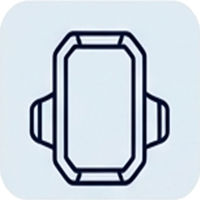

Retrouvez-nous au cœur du centre historique de Vitré au 26 Rue de la Poterie, ou appelez notre atelier directement.
26 Rue de la Poterie, 35500 Vitré
Situé dans la belle rue piétonne/commerçante de la Poterie, face aux façades historiques.
| Lundi | Fermé |
| Mardi | 10:00–13:00, 15:00–18:00 |
| Mercredi | 10:00–13:00, 15:00–18:00 |
| Jeudi | 10:00–13:00, 15:00–18:00 |
| Vendredi | 10:00–13:00, 15:00–19:00 (ferme à 19h) |
| Samedi | 10:00–13:00, 15:00–18:00 |
| Dimanche | Fermé |

Où se garer facilement à Vitré ?Une question particulière ou besoin d'un renseignement ? Nous vous répondrons dans les meilleurs délais.